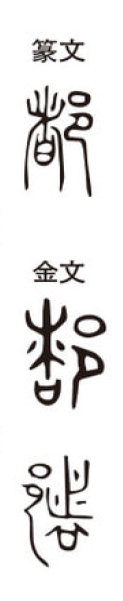

都

Kun: miyako | On: to
capital, metropolis; city; all, the whole
Explanation
The character 都 combines 者, which originally depicted an earthen fence or clay hedge formed by piling twigs on a covenant vessel (日) and covering it with earth as a protective barrier, with 邑, the enclosure showing people gathered together in a settlement. Thus it signifies a large village or settlement secured by protective walls. From this, 都 came to mean “capital,” the central place where people gather and governance is carried out. By extension, because the capital represents the whole, the character also acquired the sense of “all, general,” and further developed refined cultural connotations, as in 都雅 (toga: elegance, refinement).